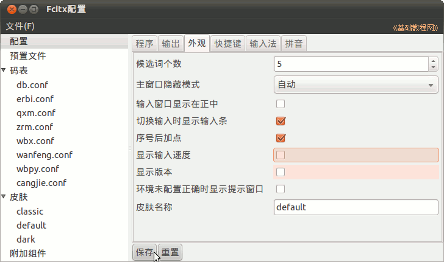

Ubuntu/GNOME 桌面程序指南
作者：TeliuTe 来源：基础教程网
八、Fcitx 输入法 返回目录 下一课Fcitx 也叫小企鹅输入法，是 Free Chinese Input Toy for X 的简写；
1、安装
1）可以在新立得中“搜索 - 标记 - 安装” fcitx 和 fcitx-config
2）还可以下载最新的安装包，或者自己编译安装；
http://code.google.com/p/fcitx/downloads/list
3）安装好已后，到 “系统 - 系统管理 - 语言支持” 中，选择 fcitx 输入法，然后注销重新登录；
4）打开一个文本输入程序，按 Ctrl + 空格 就可以输入中文，按 Ctrl + Shift 切换输入法，也可以在面板上的小企鹅上点右键，选择输入法；
2、设置
1）在上面板的输入条上点右键，选择“配置Fcitx..”，打开设置窗口，
注意设置以后要点下边的“保存”按钮；
2）配置窗口分左右两栏，在右边的“程序”标签中，设置中文字体(如文泉驿微米黑)，设好后点下边的“保存”按钮；
3）在输出中打勾“快速切换英文模式时上屏”，这样切换英文时，已输入的字母会上去；
4）在外观中可以去掉版本号、打字速度的显示；

5）在“快捷键”里，可以设置中英文切换键，往下拉滚动条可以设置翻页键；
6）“输入法”和“拼音”标签可以设定输入法作优先级和查看拼音里的删除用户词组的快捷键等；
7）在左边点“码表”下边的各个输入法，在右面板中拖动滚动条，在最下面不打勾“启用”，这个输入法就不显示在菜单里了；
详细的帮助文档，请参阅安装文件夹中的 /usr/share/fcitx/doc/fcitx4.pdf 文档；
本节学习了 Fcitx 输入法的基础知识，如果你成功地完成了练习，请继续学习下一课内容；
本教程由86团学校TeliuTe制作|著作权所有
基础教程网：http://teliute.org/
美丽的校园……
转载和引用本站内容，请保留作者和本站链接。